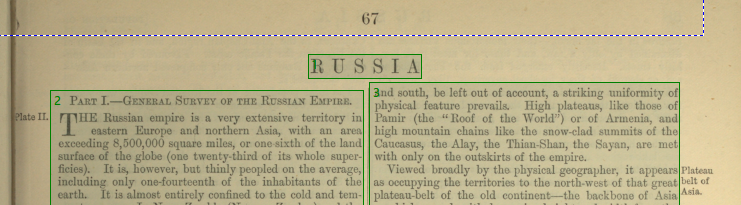
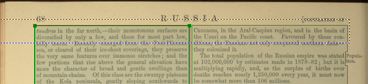

Headers
How to treat two-column entry titles
Long articles in some editions are distinguished from regular articles by the addition the entry term as a header running across both columns. In such a case, we have to include the header at the start of the article as the entry term. Draw a separate box for it, and order it appropriately.

Note: Include the header for the start of the article only. It will
reappear as a running header on every page in the print edition, but we do not include
these.
